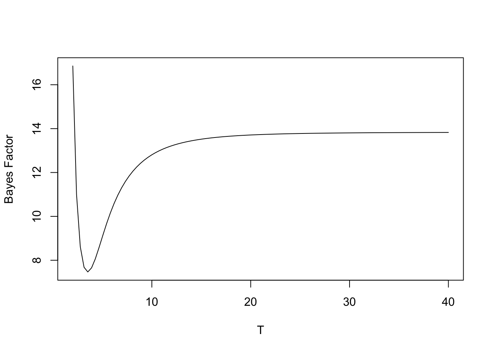

We begin by reviewing some basic notations of frequentist testing. As a simple example, suppose we observe a random sample \(y_1, ..., y_n\) from a normal population with mean \(\theta\) and known variance \(\sigma^2\). We wish to test the simple hypothesis \(H: \theta = \theta_0\) against the simple alternative \(A: \theta = \theta_1\) where \(\theta_0 < \theta_1\).
Since the sample mean \(\bar y\) is sufficient, we can consider the single observation \(\bar y\) that is normal with mean \(\theta\) and variance \(\sigma^2/n\). The likelihood function is \[
L(\theta) = \phi(\bar y; \theta, \sigma^2/n),
\] where \(\phi(y; \theta, \sigma^2)\) is the normal density with mean \(\theta\) and variance \(\sigma^2\). The most-powerful test of \(H\) against \(A\) is based on the likelihood ratio \[
\Lambda = \frac{L(\theta_1)}{L(\theta_0)}.
\] This test rejects \(H\) when \(\Lambda \ge k\) which is equivalent to rejecting when \(\bar y \ge c\). We set a Type I error probability of \(\alpha\) and choose the constant \(c\) so that \(P(\bar y \ge c | \theta = \theta_0) = \alpha\). The most-powerful test of size \(\alpha\) rejects \(H\) when \[
\bar y \ge \theta_0 + z_{1-\alpha} \frac{\sigma}{\sqrt{n}},
\] where \(z_\alpha\) is the \(\alpha\) percentile of a standard normal random variable.
Here are some comments about this testing procedure.
Two types of error? There are two mistakes one can make with a test – one can incorrectly reject \(H\) when \(H\) is true (\(\theta = \theta_0\)) or one can incorrectly accept \(H\) when \(A\) is true (\(\theta = \theta_1\)). In a frequentist test, one is controlling only the probability of the first error.
Confidence? This test has a repeated sampling validity. If one performs many tests when \(H\) is true, that is, \(\theta = \theta_0\), then the proportion of times one will incorrectly reject is \(\alpha\).
Measure of evidence? Suppose one observes an extreme value of \(\bar y\), a value that is unusual if the hypothesis \(H\) is true. The frequentist test, as constructed, does not provide a measure of evidence given this extreme value of \(\bar y\). (All one has is the repeated sampling interpretation.) R. A. Fisher proposed the p-value that is the probability of obtaining the observed value \(\bar y\) or more extreme if indeed \(H\) was true. \[
{\rm p-value} = P(\bar Y \ge \bar y | \theta = \theta_0).
\] In practice, one typically computes a p-value. This computation allows one to accept or reject the hypothesis \(H\) for any value of \(\alpha\) and provides a measure of the strength of evidence against the null hypothesis \(H\).
11.2 Introduction to Bayesian Testing
Let’s consider the problem of testing a simple null hypothesis \(H: \theta=\theta_0\) against the simple alternative hypothesis \(A: \theta = \theta_1\) for normal data, known variance, from a Bayesian perspective. Here there are two possible values of the mean, \(\theta_0\) and \(\theta_1\). Suppose we assign the prior probabilities \[
g(\theta_0), \, \, g(\theta_1) = 1 - g(\theta_0).
\] The prior odds of \(H\) is the ratio of the prior probabilities of the two hypotheses \[
O(H) = \frac{g(H)}{g(A)}.
\] Suppose we observe the sample mean \(\bar y\). The posterior probability of the mean \(\theta\) is given, by Bayes’ rule, by \[
g(\theta | y) \propto L(\theta) P(\theta) = \phi(\bar y; \theta, \sigma^2/n).
\] The posterior odds of \(H\) is the ratio of the posterior probabilities of \(H\) and \(A\)\[
O(H | y) = \frac{g(H| y)}{g(A | y)} = \frac{g(\theta_0) L(\theta_0)}{g(\theta_1) L(\theta_1)}.
\] Note that we can write the posterior odds of \(H\) as \[
O(H | y) = O(H) \times BF_{HA},
\] where \(O(H)\) is the prior odds of \(H\) and \(BF_{HA}\) is the {} \[
BF_{HA} = \frac{L(\theta_0)}{L(\theta_1)},
\] the ratio of the likelihoods of the two hypotheses.
As a simple example, let’s return to the example of determining the true IQ for our friend Joe. Our friend is taking a IQ test and his score \(y\) is normally distributed with mean \(\theta\) and variance \(\sigma^2 = 100\). We wish to test the hypothesis \(H: \theta = 100\) (Joe has average intelligence against the alternative hypothesis \(A: \theta = 130\) (Joe is a genius). Before the IQ test is given, we strongly believe Joe has average intelligence and assign \(g(100) = 0.95, g(130) = 0.05\). The prior odds that Joe has average intelligence is given by \[
O(H) = \frac{0.95}{0.05} = 19.
\] Joe scores 120 on the IQ test. We compute the Bayes factor, the ratio of the likelihoods under the average and genius hypotheses \[
BF_{HA} = \frac{\phi(120; 100, 100)}{\phi(120; 130, 100)} = \frac{ 0.00540}{0.02420} = 0.223.
\] The posterior odds of “average” is given by the product of the prior odds and the Bayes factor \[
O(H | 120) = 19 \times 0.223 = 4.24.
\] It might be helpful to convert the odds of “average” to a probability: \[
P(H | 120) = \frac{O(H|120)}{O(H|120) + 1} = \frac{4.24}{4.24+1} = 0.809.
\] Although the data provided some evidence that Joe is a genius, we still strongly believe Joe has average intelligence.
11.3 Testing about a Normal Mean
11.3.1 The one-sided hypothesis
As a slight generalization, suppose we again have normal sampling \(y_1, ..., y_n\) with unknown mean \(\theta\) and known variance \(\sigma^2\) and we are interested in testing the one-sided hypothesis \(H: \theta \le \theta_0\) against the alternative hypothesis \(A: \theta > \theta_0\).
Suppose one assigns a normal(\(\mu, \tau^2\)) prior. Then the prior odds is the ratio of the prior probabilities of \(H\) and \(A\): \[
O(H) = \frac{P(H)}{P(A)} = \frac{P(\theta \le \theta_0)}{P(\theta > \theta_0)}.
\] After one observes the data \(\bar y\), the new opinions about the mean \(\theta\) are reflected in the posterior density N(\(\mu_1, \tau_1^2\)), where \[
\mu_1 = \frac{\mu/\tau^2 + n \bar y/\sigma^2}{1/\tau^2+n/\sigma^2}, \,\, \tau_1^2 = \frac{1}{1/\tau^2+n/\sigma^2}.
\] The posterior odds is the ratio of the posterior probabilities of the two hypotheses \[
O(H|y) = \frac{P(H|y)}{P(A|y)} = \frac{P(\theta \le \theta_0|y)}{P(\theta > \theta_0|y)},
\] and the Bayes factor is the ratio of the posterior odds to the prior odds \[
BF_{HA} = \frac{O(H|y)}{O(H)}.
\]
Let’s return to the Joe IQ example. If \(\theta\) represents Joe’s true IQ, suppose we are interested in testing the hypotheses \(H: \theta \le 100\), Joe has at most average intelligence, against the alternative hypothesis \(A: \theta > 100\), Joe has above-average intelligence. If our prior beliefs are normal with mean \(\mu = 100\) and \(\tau^2 = 225\), then the prior probability of \(H\) is equal to \[
P(H) = P(\theta \le 100) = 1/2,
\] and so the prior odds is \[
O(H) = 1\]. If Joe’s observed IQ test score is \(y = 120\), we showed in Chapter ??? that the posterior density for \(\theta\) is normal with mean \(\mu_1 = 113.8\) and variance \(\tau_1^2 = 69.23.\) The posterior probability of \(H\) is equal to \[
P(H | y=120) = P(\theta \le 100 | y=120) = \Phi\left(\frac{100-120}{69.23}\right) = \Phi(-0.29) = 0.386,
\] and the posterior odds of \(H\) is \[
O(H | y=120) = \frac{0.386}{1-0.386} = 0.639.
\] In this example, since the prior odds is 1, the Bayes factor \(BF_{HA}\) is also equal to 0.639, indicating that the data supports the alternative hypothesis that Joe has above-average intelligence. Since the posterior probability of \(A\) is relatively small (0.386), this single test result has not provided decisive evidence that Joe has an above-average true IQ.
11.3.1.1 P-values and posterior probabilities of hypotheses}
In this setting, suppose we place a uniform, noninformative prior on \(\theta\). Then the posterior density of \(\theta\) is N(\(\bar y, \sigma^2/n\)) and the posterior probability of the null hypothesis is given by
\[\begin{eqnarray*}
P(H|y) = P(\theta \le \theta_0 | y) \nonumber \\
= P\left( Z < \frac{\sqrt{n} (\theta_0 - \bar y)} {\sigma} | y \right) \nonumber \\
= \Phi \left(\frac{\sqrt{n} (\theta_0 - \bar y)} {\sigma}\right), \nonumber \\
\end{eqnarray*}\] where \(Z\) is a standard normal random variable and \(\Phi()\) is a standard normal cdf. This expression should look slightly familiar. If we observe \(\bar y\), the p-value is the probability, under the hypothesis \(\theta = \theta_0\), of observing a result at least as extreme as \(\bar y\): \[\begin{eqnarray*}
{\rm p-value} = P(\bar Y \ge \bar y | \theta = \theta_0)\nonumber \\
= P\left( Z > \frac{\sqrt{n}(\bar y - \theta_0)}{\sigma} \right) \nonumber \\
= 1 - \Phi \left(\frac{\sqrt{n} (\bar y-\theta_0)} {\sigma}\right), \nonumber \\
= \Phi \left(\frac{\sqrt{n} (\theta_0 - \bar y)} {\sigma}\right). \nonumber \\
\end{eqnarray*}\] We obtain an interesting result. When we place a uniform prior on the parameter, the posterior probability of the null hypothesis is equal to the p-value. This means that it actually makes sense to think about the p-value as a posterior probability in the one-sided testing situation. We will shortly see that this computational equivalence between a p-value and a posterior probability isn’t always true.
11.3.2 The two-sided hypothesis
We next consider the common situation where one is interested in testing the “point” null hypothesis \(H: \theta = \theta_0\) against the two-sided alternative \(A: \theta \neq \theta_0\). In the example of coin flipping, we may wish to test the common hypothesis of fairness that is equivalent to testing the null hypothesis that the probability of flipping heads \(p\) is exactly equal to 0.5.
We focus on normal sampling and think about an appropriate prior on the normal mean \(\theta\). Here we can’t simply place a continuous prior on \(\theta\) since the prior probability of the point null hypothesis would be equal to zero. Instead we place a mixed distribution, that is, a combination of a discrete and a continuous distribution, to reflect the belief in these two hypotheses.
Suppose we assign a probability \(\gamma\) to the hypothesis \(\theta = \theta_0\), and so the alternative hypothesis has a prior probability of \(1 - \gamma\). We then assign a continuous prior \(g_1(\theta)\) to the values of \(\theta\) under the hypothesis \(A\). With this “mixed” prior, we wish to compute the posterior probability of the hypotheses.
Let \[
L(\theta) = \exp\left( -\frac{n}{2 \sigma^2}(\bar y - \theta)^2 \right)
\] denote the likelihood of \(\theta\). The posterior probability that \(\theta = \theta_0\) is proportional to \[
P(H | y) \propto \gamma L(\theta_0),
\] and the posterior probability that \(\theta \neq \theta_0\) is proportional to \[
P(A | y) \propto (1 - \gamma) \int L(\theta) g_1(\theta) d\theta.
\] So the posterior probability of \(H\) has the expression \[
P(H| y) = \frac{\gamma L(\theta_0)}{\gamma L(\theta_0) + (1 - \gamma) \int L(\theta) g_1(\theta) d\theta}.
\]
In practice, one has to specify two quantities, \(\gamma\), the prior probability that \(\theta = \theta_0\), and \(g_1(\theta)\), the prior density of the normal mean under the alternative hypothesis that \(\theta \neq \theta_0\). It is reasonable to set \(\gamma = 0.5\), indicating that one believes that the hypotheses \(H\) and \(A\) are equally likely. To specify \(g_1(\theta)\), suppose that when \(\theta \neq \theta_0\) is true, values of \(\theta\) close to \(\theta_0\) are more likely than values of \(\theta\) far from \(\theta_0\). Under this assumption, then one could let \(g_1\) be normal with mean \(\theta_0\) and standard deviation \(\tau\). With this choice, a straightforward calculation shows that \[
P(H|y) = \frac{ \phi(\bar y; \theta_0, \sigma^2/n)}{\phi(\bar y; \theta_0, \sigma^2/n) + \phi(\bar y; \theta_0, \sigma^2/n+\tau^2)},
\] where \(\phi(y; \theta, \sigma^2)\) is the normal density with mean \(\theta\) and variance \(\sigma^2\).
In our IQ example, suppose we wish to test the hypothesis \(H: \theta = 100\) that Joe has “average” intelligence, against the hypothesis \(A: \theta \neq 100\) that Joe’s intelligence is not average. One observes the IQ test score \(y\) that is normally distributed with mean \(\theta\) and variance \(\sigma^2 = 100\). Suppose \(\gamma = 0.5\) and \(\theta\) has a N(100, 225) distribution when \(\theta \neq 100\). One observes the test score \(y = 120\) and the posterior probability that Joe is average is given by \[\begin{eqnarray*}
P(H|120) = \frac{ \phi(120; 100, 100)}{\phi(120; 100, 100) + \phi(120; 100, 100 + 225)} \nonumber \\
= 0.311. \nonumber \\
\end{eqnarray*}\] Since the posterior probability of \(H\) is pretty close to 0.5, there is little evidence from this single test score that Joe does not have average intelligence.
To use this procedure, one needs to specify \(\tau\), the standard deviation of the prior when the alternative hypothesis \(\theta \neq \theta_0\) is true. Since it seems that the value \(\tau = 15\) was made arbitrarily, we should investigate the sensitivity of the posterior probability with respect to this standard deviation. Table ?? displays values of the posterior probability \(P(H| 120)\) for a range of values of \(\tau\). Note that the minimum value of this posterior probability in the table is equal to \(0.311\) which implies that \(P(H | 120) \ge 0.311\) for all \(\tau\). This calculation shows that Joe’s score of 120 only provides a small amount of evidence against the hypothesis that Joe’s true IQ is 100.
\(\tau\)
\(P(H)\)
1
1.000
0.496
2
2.000
0.486
3
4.000
0.450
4
8.000
0.370
5
15.000
0.311
6
30.000
0.343
7
60.000
0.465
8
600.000
0.890
How does this Bayesian calculation compare with a p-value? For a two-sided test, the p-value is equal to two times the tail probability of \(\bar y\) when \(\theta = \theta_0\). Here the p-value is twice the probability of observing an IQ score at least as extreme as 120 when \(y\) is distributed as N(100, 100): \[
{\rm p-value} = 2 \times P(\bar Y \ge 120 | \theta = 100) = 2 \times (1 - \Phi(2)) = 0.0455
\] The Bayesian posterior probability of \(\theta = 100\) is significantly larger than the p-value. This suggests that the p-value overstates the evidence against the point null hypothesis.
11.4 Comparing Models by Bayes Factors
Bayes factors provide a general way of comparing two Bayesian models. Let \(y\) denote the vector of observations whose distribution depends on a (possibly) vector-valued parameter \(\theta\). A Bayesian model is a specification for the sampling density \(f(y | \theta)\) and the prior density \(g(\theta)\). Suppose we wish to compare models \(M_1\) and \(M_2\) where \[
M_i: y \sim f_i(y | \theta), \, \, \theta \sim g_i(\theta).
\] For each model, we define the predictive or marginal density of \(y\), \(f_i (y)\) defined by \[
f_i(y) = \int f_i(y | \theta) g_i(\theta) d\theta.
\] The the Bayes factor in support of model \(M_1\) over model \(M_2\) is the ratio of the corresponding predictive densities of the two models: \[
B_{12} = \frac{f_1(y)}{f_2(y)} = \frac {\int f_1(y | \theta) g_1(\theta) d\theta}{\int f_2(y | \theta) g_2(\theta) d\theta}.
\]
To illustrate Bayes factors, we return to the problem of estimating the mean number of hits per weekday on a particular website. The daily counts of website hits \(y_1, ..., y_n\) are assumed to follow a Poisson distribution with mean \(\lambda\). We describe two models that differ with respect to the prior placed on the mean parameter \(\lambda\).
The prior for model \(M_1\) says that the mean website hit count \(\lambda\) is likely to fall between 15 and 25, and the prior for \(M_2\) says that \(\lambda\) is likely a smaller value between 8 and 12. If we observe the website counts
we are interested in comparing the models by means of a Bayes factor.
In this example of Poisson sampling,we are using a conjugate gamma prior and we can compute the predictive density analytically. If \(\lambda\) has a Gamma(\(a, b\)) prior, then the predictive density of \(y_1, ..., y_n\) is given by \[\begin{eqnarray*}
f(y) = \int \prod_{i=1}^n \left(\frac{\lambda^{y_i} \exp(-\lambda)}{y_i!}\right) \frac{b^a \lambda^{a-1} \exp(-b \lambda)}{\Gamma(a)} d\lambda \nonumber \\
= \frac{\Gamma(a + s) b^a}{\Gamma(a) \left(\prod_{i=1}^n y_i\right) (b+n)^{a+s}}, \nonumber \\
\end{eqnarray*}\] where \(s = \sum y_i\) and \(n\) is the sample size. It is convenient to express marginal densities and Bayes factors on the log scale. The logarithm of the marginal density is given by \[
\log f(y) = \log\Gamma(a+s)-\log\Gamma(a)-\sum_{i=1}^n \log (y_i!)+a \log(b) - (a+s)\log(b+n).
\]
Using this expression, we compute the log marginal density for each of the two priors in models \(M_1\) and \(M_2\). Here \(s = 486\), \(n = 21\), and \[
\log f_1(y) = -67.83, \, \, \log f_2(y) = -76.59.
\] On the log scale, the Bayes factor in favor of model \(M_1\) over \(M_2\) is equal to \[
\log B_{12} = -67.83 - (- 76.59) = 8.76,
\] and the Bayes factor in support of model \(M_1\) is equal to \(BF_{12} = \exp(8.76) = 6574\).
The value of the Bayes factor can be understand by looking at Figure 1. This figure displays the likelihood and the two priors. Note that the first prior that reflects the belief that \(\lambda\) is between 15 and 25 is consistent with the likelihood. In contrast, there is substantial conflict of the likelihood function with the second prior that says that \(\lambda\) is around 10. The Bayes factor of 6574 indicates that the observed values of \(y\) are much more likely with the first prior than the second prior.
In many situations, it will not be possible to integrate out the parameter analytically to compute the predictive density. Fortunately, there are several good approximations available for computing \(f(y)\).
One approximation method is based on the Laplace method illustrated in Chapter 5. As in that chapter, let \(h(\theta)\) denote the logarithm of the joint density of \((y, \theta)\), that is, \(h(\theta) = \log \left( f(y|\theta) g(\theta) \right)\). We approximate \(h(\theta)\) by a Taylor series about the posterior mode \(\hat \theta\): \[
h(\theta) \approx h(\hat \theta) + (\theta - \hat \theta)' h''(\hat \theta)(\theta - \hat \theta)/2.
\] Using this approximation, one can integrate out \(\theta\) to get the following approximation to the predictive density: \[
f(y) = \int \exp(h(y, \theta)) d\theta \approx (2\pi)^{d/2} g(\hat \theta) f(y | \hat \theta) |-h''(\hat \theta)|^{-1/2},
\] where \(d\) is the number of parameters and \(h''(\hat \theta)\) is the Hessian matrix evaluated at the mode.
Continuing with our web site hit example, consider the comparison of several models for the web site counts collected on weekdays and weekends.
Recall that the counts {\(y_{Ai}\)} from the weekend days are assumed Poisson with mean \(\lambda_A\) and counts {\(y_{Bj}\)} from the weekday days are assumed Poisson with mean \(\lambda_B\). Since we are interested primarily in comparing the two means, consider the reparameterization \[
\theta_1 = \log \lambda_A - \log \lambda_B, \, \, \theta_2 = \log \lambda_A + \log \lambda_B.
\] The parameter \(\theta_1\) measures the difference between the Poisson means on the log scale and \(\theta_2\) represents the overall size of the means.
Consider the following two prior distributions for \((\theta_1, \theta_2)\):
Figure 2 displays contour plots of the two prior models. Both priors state that the overall size of the means (as measured by the parameter \(\theta_2\)) is in the neighborhood of 5. The priors differ by the distribution placed on the difference in means \(\theta_1\). Model 1 places a relatively diffuse prior on \(\theta_1\) centered at zero, and Model 2 assigns a prior on \(\theta_1\) concentrated about zero. The prior for Model 2 is concentrated about the hypothesis \(H\) that \(\lambda_1 = \lambda_2\) and the prior for Model 1 places more of its mass on the alternative hypothesis \(A\) that \(\lambda_1 \neq \lambda_2\).
By using the function laplace() in the LearnBayes package, one can compute the log predictive density for each of the two models. We find \[
\log f(y | M_1) = -100.23, \, \, \log f(y | M_2) = -108.79,
\] and the log Bayes factor in support of Model \(M_1\) over Model \(M_2\) is \[
\log BF_{12} = \log f(y | M_1) - \log f(y | M_2) = -100.23 - (-108.79) = 8.56.
\] Since the Bayes factor in support of \(M_1\) is \(\exp(8.56) = 5218\), there is strong evidence against the hypothesis \(H\) that the Poisson means for the weekend and weekday web counts are equal.
11.5 Comparing Geometric and Poisson Distributions
(From Link and Barker (2010))
Suppose we observe a random sample \(y_1, ..., y_n\) that is either distributed from the geometric density \[
f_G(y) = p (1-p)^y, y = 0, 1, 2, ...
\] or the Poisson density \[
f_P(y) = \frac{e^{\lambda} \lambda^y}{y!}, y = 0, 1, 2, ...
\] We observe the sample of values \[
0, 1, 2, 3, 8
\] What is the evidence in support of the geometric density over the Poisson density?
First, to complete define the two models, a prior needs to be assigned to the parameters \(p\) and \(\lambda\). To make the priors comparable, assume the mean \(\mu = E(Y)\) has a uniform distribution on the interval from 0 to a large value \(T\). For the Poisson sampling model, the mean is given by \(\mu = \lambda\), so this results in the prior \[
g(\lambda) = \frac{1}{T}, 0 < \lambda < T.
\] For the geometric model, the mean of \(Y\) is given by \(\mu = (1-p)/p\). If we assign \(\mu\) a uniform(0, \(T\)), then by a transformation argument, one can show the prior is given by \[
g(p) = \frac{1}{T p^2}, \, \, \frac{1}{T+1} < p < 1.
\]
11.5.0.1 Direct calculation
Now that the priors are defined, we can compute the marginal densities. Generally, if the sampling density is defined in terms of the parameter \(\theta\) and a prior \(g(\theta)\) is defined, the marginal density is given by \[
f(y) = \int g(\theta) \prod_{i=1}^n f(y_i | \theta) d\theta .
\]
In the following, it is convenient to let \(s = \sum_{i=1}^n y_i\) be the sum of the observations. For the Poisson model, we obtain \[\begin{eqnarray*}
f_P(y) = \int_0^T \frac{e^{-ny} \lambda^s}{\prod y_i!} \frac{1}{T} d\lambda.
\nonumber \\
\end{eqnarray*}\] We recognize the kernel of the integrand as a gamma density with shape parameter \(s+1\) and rate parameter \(n\), so the integral can be evaluated in terms of a gamma cdf. We obtain \[\begin{eqnarray*}
f_P(y) = \frac{ F_G(T; s+1, n) \Gamma(s+1)}{T n^{s+1}\prod y_i! },
\nonumber \\
\end{eqnarray*}\] where \(F_G(x; a, b)\) is the cdf of a Gamma(\(a, b\)) density evaluated at \(x\).
The marginal density for the geometric model is given by \[\begin{eqnarray*}
f_G(y) = \int_{1/(T+1)}^1 p^n (1-p)^s \frac{1}{T p^2} dp
\nonumber \\
= \frac{1}{T} \int_{1/(T+1)}^1 p^{n-2} (1-p)^s dp.
\end{eqnarray*}\] We recognize the integrand as the kernel of a beta(\(n-1, s+1)\) density and we obtain \[\begin{eqnarray*}
f_G(y) = \frac{(1-F_B(1/(T+1), n-1, s+1)) B(n-1, s+1)}{T},
\nonumber \\
\end{eqnarray*}\] where \(F_B(x; a, b)\) is the cdf of a Beta(\(a, b\)) density.
The Bayes factor in support of the geometric model over the Poisson is given by \[
BF_{GP} = \frac{f_G(y)}{f_B(y)}.
\]
A short function compute.bf() is used to compute the Bayes factor. We assume the data is stored in the vector y and the single argument of the function is the value of \(T\).
we plot the Bayes factor as a function of \(T\) for values from 2 to 40 (see Figure 1).
Note that as \(T\) approaches infinity, the Bayes factor approaches the limiting value of 13.84. There is some support for the geometric model on the basis of this small dataset.
Code
y <-c(0, 1, 2, 3, 8)compute.bf <-function(T, y){ n <-length(y) s <-sum(y) f1 <- (1/ T) * (1-pbeta(1/ (T +1), n -1,s +1)) *beta(n -1, s +1) f2 <- (1/ T) /prod(gamma(y +1)) *pgamma(T, shape = s +1, rate = n) *gamma(s +1) / n ^ (s +1) f1 / f2}curve(compute.bf(x, y), from =2, to =40,xlab ="T", ylab ="Bayes Factor")

11.5.0.2 Simulation estimate
There is an attractive Gibbs sampling approach for computing the Bayes factor. Define a model variable \(M\) that is equal to 1 for the geometric model and 2 for the Poisson model. One places the prior probabilities \(P(M = 1) = \pi, P(M = 2) = (1-\pi)\). Let \(\mu\) denote the mean parameter \(E(Y)\). The joint posterior density of (\(M, \mu)\) is given by \[
g(M, \mu | y) \propto I(M = 1) \pi \prod_{i=1}^n f_G(y_i | \mu) g_G(\mu) + I(M = 2)(1-\pi) \prod_{i=1}^n f_P(y_i | \mu) g_P(\mu).
\] Both of the conditional distributions \(g(M | \mu, y)\) and \(g(\mu | M, y)\) have simple forms.
Here is an outline of the Gibbs sampler. We begin with a starting estimate at \(\mu\) – a reasonable estimate is the sample mean \(\mu^{(0)} = \bar y\). If the initial model probability vector is stored in the vector {}, then we simulate a value of the model \(M\) by the following R code.
These two steps are cycled \(m\) times and one obtains a simulated sample denoted by \((M^{(j)}, \mu^{(j)}), j = 1, ..., m\).
Suppose that the simulated sample of the model indicator \(M\) is taken as a sample from its posterior density. The posterior odds of \(M = 1\) is estimated by the ratio \[
\frac{\sum_{j=1}^m I(M^{(j)} = 1)}{\sum_{j=1}^m I(M^{(j)} = 2)}.
\] The estimate at the Bayes factor in support of the geometric model is estimated by the ratio of the estimate of the posterior odds to the prior odds: \[
\hat{BF} = \frac{\sum_{j=1}^m I(M^{(j)} = 1)}{\sum_{j=1}^m I(M^{(j)} = 2)} \div \frac{\pi}{1-\pi}.
\]
A function gibbs.MS was written to implement the Gibbs sampler. The inputs are prior model vector pi, the data vector y, and the number of iterations of the sampler iter. The output is a list consisting of model, a vector of the simuated values of \(M\), and theta, a vector of the simulated draws of \(\mu\). In the following output, we run the sampler for 100,000 iterations using the prior input values \((\pi, 1-\pi) = (0.1, 0.9)\) . We use the table() function to tabulate the model values, and compute the posterior odds from the tabled values.
Code
gibbs_MS <-function(prior, y, m){ s <-sum(y) n <-length(y)# initial estimate mu <-mean(y)# storage for Gibbs variates sim_pars <-matrix(0, m, 2)for(j in1:m){ log.M1 <-sum(dgeom(y, 1/ (1+ mu), log=TRUE)) +log(prior[1]) log.M2 <-sum(dpois(y, mu, log=TRUE)) +log(prior[2]) prob <-exp(log.M1) / (exp(log.M1) +exp(log.M2)) M <-ifelse(runif(1) < prob, 1, 2)if(M ==2){ mu <-rgamma(1, shape = s +1, rate = n) } else { p <-rbeta(1, n -1, s +1) mu <- (1- p) / p } sim_pars[j, ] <-c(M, mu) } sim_pars}prior <-c(.1,.9)y <-c(0, 1, 2, 3, 8)S <-gibbs_MS(prior, y, 100000)model.freq <-table(S[, 1])post.odds <- model.freq["1"] / model.freq["2"]BF <- post.odds / (prior[1] / prior[2])
The output is \(BF\) = 13.7744319 which is very close to the exact value of 13.84 in the previous calculation.
11.5.0.3 Model averaging
We have focused on comparing the geometric and Poisson models by a Bayes factor. What if we are interested in inference about the mean parameter \(\mu\)?
If the data have a Poisson distribution and \(\mu\) has a uniform prior, we have already seen that the posterior density for \(\mu\) is Gamma with shape \(s = \sum y_i+1\) and rate \(n\). If instead the data have a geometric distribution and a uniform prior is place on the mean, then the posterior distribution of the proportion \(p\) is beta with parameters \(a = n-1\) and \(b = \sum y_i +1\). The corresponding posterior density for the mean \(\mu = (1-p)/p\) is given by \[
g(\mu | y, M=1) = f_B\left(\frac{1}{1+\mu}\right) \frac{1}{(1+\mu)^2},
\]
where \(f_B()\) is the beta density. What if one is unsure about the correct sampling density? If one places prior probabilities \(\pi\) and \(1-\pi\) on the geometric (Model 1) and Poisson (Model 2) models, respectively, then the posterior density for the mean \(\mu\) has the form \[
g(\mu|y) = \pi(y) g(\mu | M = 1) + (1- \pi(y)) g(\mu | M = 2),
\] where \(g(\mu | M = m)\) is the posterior of \(\mu\) conditional on model \(m\), and \(\pi(y)\) is the posterior probability of Model 1. This posterior model probability is given by \[
\pi(y) = \frac{\pi BF_{12}}{\pi BF_{12}+1-\pi},
\] where \(BF_{12}\) is the Bayes factor in support of Model 1.
Figure 2 illustrates inference about the mean \(\mu\) for the same data set and uniform prior where the prior probability of Model 1 (geometric) is \(\pi = 0.1\). Two of the curves represent posterior densities conditional on the geometric (red line) and Poisson sampling (black line) models. The third curve (blue line) is a “modeled averaged” posterior density, where the two conditional posterior densities are averaged by the model posterior probabilities.
Code
y <-c(0, 1, 2, 3, 8)s <-sum(y)n <-length(y)curve(dgamma(x, s +1, n), 0, 8,xlab ="mu", ylab ="Density")curve(dbeta(1/ (1+ x), n -1, s +1) / (1+ x) ^2,add =TRUE, col ="red")mix_post <-function(x){ p <-0.1* BF / (0.1* BF +0.9) p *dgamma(x, s +1, n) + (1- p) *dbeta(1/ (1+ x), n -1, s +1) / (1+ x) ^2}curve(mix_post(x), add =TRUE, col ="blue")